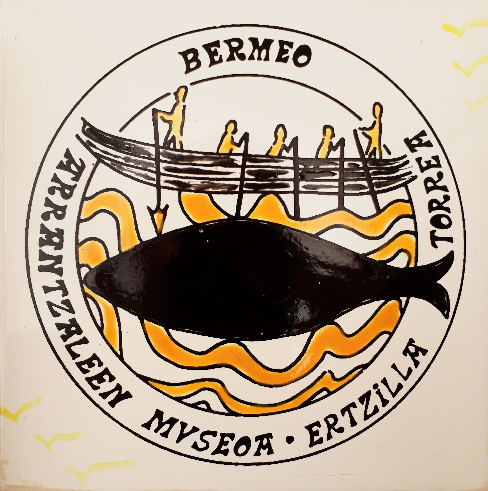

<!-- <ion-header [translucent]="true">
  <ion-toolbar>
    <ion-title>
      Tab 1
    </ion-title>
  </ion-toolbar>
</ion-header>
 -->
 <script>

    document.getElementById("mostrarParrafoBtn").addEventListener("click", function() {
    mostrarParrafo();
    });

    function playAudio(audioId) {
    var audio = document.getElementById(audioId);
    if (audio.paused) {
      audio.play();
    } else {
      audio.pause();
      audio.currentTime = 0;
    }
  }
</script>

 <ion-content [fullscreen]="true">
  <ion-header collapse="condense">
    <ion-toolbar>
      <ion-title size="large">Tab 2</ion-title>
    </ion-toolbar>
  </ion-header>
<div class="container"> 
  <div id="galdera">
    Ezagutzen duzue Arrantzale Museoa?Badakizue zer den? 
  </div>
    
  
  <div class="paragraph-container" id="paragraphContainer">
    <button (click)="playAudio('ArrantzaleMuseoa')" style="margin-right: 2vh;">(Egin klik audioa entzuteko)<br><br>
      <audio id="ArrantzaleMuseoa" src="../../assets/audioak/Arrantzale-Museoa2.mp3"></audio>
    <svg xmlns="http://www.w3.org/2000/svg" width="30" height="30" fill="currentColor" class="bi bi-headphones" viewBox="0 0 16 16">
      <path d="M8 3a5 5 0 0 0-5 5v1h1a1 1 0 0 1 1 1v3a1 1 0 0 1-1 1H3a1 1 0 0 1-1-1V8a6 6 0 1 1 12 0v5a1 1 0 0 1-1 1h-1a1 1 0 0 1-1-1v-3a1 1 0 0 1 1-1h1V8a5 5 0 0 0-5-5"/>
    </svg>
    </button>
    <br><br>
    <p id="bermeoText">
      Bermeo euskal kostaldean kokaturik dagoen herri txiki bat da. Bertako Portu Zaharrean Ertzilla Dorre bat dago, oso garrantzitsua dena. Dorre hori 1943. urtean monumentu nazional izendatu zuten. Gaur egun,
      <button class="basic-button" (click)="presentPopover()">💡🐙Bermeoko Arrantzale Museoa🐙💡</button> <audio id="audio69" src="../../assets/audioak/Arrantzale-Museoa2.mp3"></audio> moduan ezagutzen da.
    </p> 
    
  </div>
  <div id="hurrengoaBtn">
    <button (click)="hurrengoaButtonClicked()" [disabled]="!(audioArrantzaleMuseoaPlayed)"> <!--[disabled]="!areAudiosPlayed"-->
      <svg xmlns="http://www.w3.org/2000/svg" width="30" height="30" fill="currentColor" class="bi bi-arrow-right-circle" viewBox="0 0 16 16">
      <path fill-rule="evenodd" d="M1 8a7 7 0 1 0 14 0A7 7 0 0 0 1 8m15 0A8 8 0 1 1 0 8a8 8 0 0 1 16 0M4.5 7.5a.5.5 0 0 0 0 1h5.793l-2.147 2.146a.5.5 0 0 0 .708.708l3-3a.5.5 0 0 0 0-.708l-3-3a.5.5 0 1 0-.708.708L10.293 7.5z"/>
    </svg></button>
  </div>

</div>
</ion-content>
